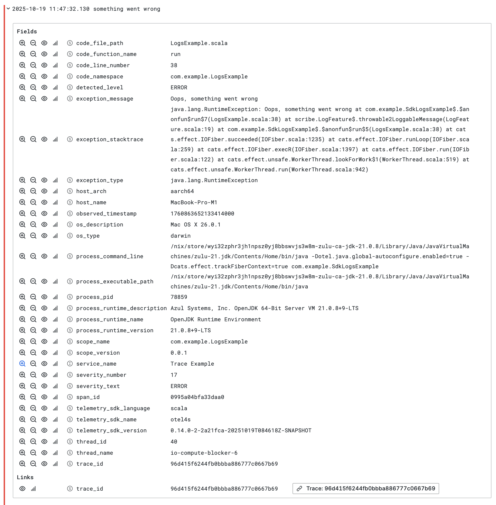

Bridge Scribe logs into OpenTelemetry
Use this guide to forward events from Scribe into an OpenTelemetry logs pipeline. The bridge keeps Scribe as
the application logging API and translates each scribe.LogRecord into an otel4s LogRecordBuilder.
Prerequisites
- A library or application that already uses Scribe.
- A
LoggerProvidersupplied by an otel4s backend. For a JVM application, follow Set up otel4s in a JVM application.
1. Add the bridge dependencies
Depend on the backend-neutral logs API so users of a library integration can choose their otel4s backend. This example also uses stable semantic conventions for source-code attributes.
libraryDependencies ++= Seq(
"org.typelevel" %% "otel4s-core-logs" % "1.1.0",
"org.typelevel" %% "otel4s-semconv" % "1.1.0",
)//> using dep "org.typelevel::otel4s-core-logs:1.1.0"
//> using dep "org.typelevel::otel4s-semconv:1.1.0"2. Translate Scribe records
Implement Scribe's LoggerSupport and create an otel4s logger for each source logger. Check meta.isEnabled before
building the record so disabled OpenTelemetry pipelines avoid attribute and stack-trace work.
import cats.Monad
import cats.syntax.all._
import org.typelevel.otel4s.{AnyValue, Attribute, Attributes}
import org.typelevel.otel4s.logs.{LogRecordBuilder, LoggerProvider, Severity}
import org.typelevel.otel4s.logs.{Logger => OtelLogger}
import org.typelevel.otel4s.semconv.attributes.CodeAttributes
import scribe._
import scala.concurrent.duration._
import scala.util.chaining._
final class ScribeLoggerSupport[F[_]: Monad, Ctx](
provider: LoggerProvider[F, Ctx]
) extends LoggerSupport[F[Unit]] {
def log(record: => LogRecord): F[Unit] =
for {
sourceRecord <- Monad[F].pure(record)
// use the bridge library's version here
logger <- provider
.logger(sourceRecord.className)
.withVersion("1.0.0")
.get
// retrieve the current context
context <- logger.currentContext
severity = toSeverity(sourceRecord.level)
// Check if logging instrumentation is enabled for the current context.
// NOTE: this does not check whether an individual logger is enabled.
// If the OpenTelemetry logs pipeline is active, `isEnabled` returns true
// regardless of the specific logger or severity.
isEnabled <- logger.meta.isEnabled(context, severity, None)
// if enabled, build and emit the log record
_ <-
if (isEnabled) buildLogRecord(logger, context, sourceRecord).emit
else Monad[F].unit
} yield ()
private def buildLogRecord(
logger: OtelLogger[F, Ctx],
context: Ctx,
record: LogRecord
): LogRecordBuilder[F, Ctx] =
logger.logRecordBuilder
// severity
.pipe { builder =>
toSeverity(record.level).fold(builder)(builder.withSeverity)
}
.withSeverityText(record.level.name)
// event timestamp
.withTimestamp(record.timeStamp.millis)
// log message
.withBody(AnyValue.string(record.logOutput.plainText))
// thread info
.pipe { builder =>
builder.addAttributes(
if (record.thread.getId != -1) {
Attributes(
Attribute("thread.id", record.thread.getId),
Attribute("thread.name", record.thread.getName)
)
} else {
Attributes(Attribute("thread.name", record.thread.getName))
}
)
}
// source-code info
.addAttributes(codePathAttributes(record))
// exception info
.pipe { builder =>
record.messages
.collect {
case scribe.throwable.TraceLoggableMessage(throwable) => throwable
}
.foldLeft(builder)((current, throwable) => current.withException(throwable))
}
// Scribe data and MDC
.pipe { builder =>
if (record.data.nonEmpty) builder.addAttributes(dataAttributes(record.data))
else builder
}
// trace and span context
.withContext(context)
private def toSeverity(level: Level): Option[Severity] =
level match {
case Level("TRACE", _) => Some(Severity.trace)
case Level("DEBUG", _) => Some(Severity.debug)
case Level("INFO", _) => Some(Severity.info)
case Level("WARN", _) => Some(Severity.warn)
case Level("ERROR", _) => Some(Severity.error)
case Level("FATAL", _) => Some(Severity.fatal)
case _ => None
}
private def codePathAttributes(record: LogRecord): Attributes = {
val builder = Attributes.newBuilder
builder += Attribute("code.namespace", record.className)
builder += CodeAttributes.CodeFilePath(record.fileName)
builder ++= record.line.map(line => CodeAttributes.CodeLineNumber(line.toLong))
builder ++= record.column.map(column => CodeAttributes.CodeColumnNumber(column.toLong))
builder ++= record.methodName.map(CodeAttributes.CodeFunctionName(_))
builder.result()
}
private def dataAttributes(data: Map[String, () => Any]): Attributes = {
val builder = Attributes.newBuilder
data.foreach { case (key, getValue) =>
getValue() match {
case value: String => builder += Attribute(key, value)
case value: Boolean => builder += Attribute(key, value)
case value: Byte => builder += Attribute(key, value.toLong)
case value: Short => builder += Attribute(key, value.toLong)
case value: Int => builder += Attribute(key, value.toLong)
case value: Long => builder += Attribute(key, value)
case value: Double => builder += Attribute(key, value)
case value: Float => builder += Attribute(key, value.toDouble)
case _ =>
// Ignore unsupported values.
// Alternatively, stringify them in a custom fallback branch.
()
}
}
builder.result()
}
}Replace 1.0.0 with the bridge library's version. The logger name and version identify the instrumentation scope that
emitted the OpenTelemetry log record.
The bridge maps:
- Scribe levels to OpenTelemetry severity numbers and preserves the original level text
- the source timestamp and formatted message
- thread, source-code, and Scribe data attributes
- exceptions from Scribe's structured messages
- the current otel4s context for trace and span correlation
meta.isEnabled reports whether the OpenTelemetry logs pipeline is active. It does not apply per-logger severity
filtering. Scribe remains responsible for deciding whether a record's level is enabled.
3. Install the bridge
Create the bridge from the backend's LoggerProvider and install it through the Scribe configuration used by your
application. This example invokes the support directly to show that a log emitted inside a span carries that span's
context.
import cats.effect.{IO, IOApp}
import org.typelevel.otel4s.oteljava.OtelJava
import org.typelevel.otel4s.oteljava.context.Context
object TelemetryApp extends IOApp.Simple {
def run: IO[Unit] =
OtelJava.autoConfigured[IO]().use { otel4s =>
val logging = new ScribeLoggerSupport[IO, Context](otel4s.loggerProvider)
otel4s.tracerProvider.get("example").flatMap { tracer =>
tracer.span("example-operation").surround {
logging.error(
"something went wrong",
new RuntimeException("example failure")
)
}
}
}
}The exported record contains the active trace and span identifiers:

What's next
- Verify the bridge with an in-memory backend: Test logs emitted by your code
- Look up record fields, severity values, and no-op implementations: Logs API reference
- Learn how otel4s carries context through effects: How otel4s context propagation works